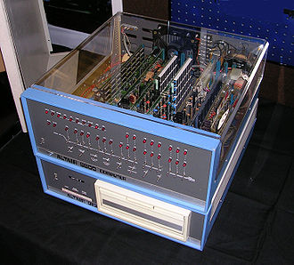

| Gates read the January 1975 issue of Popular Electronics which demonstrated the Altair 8800, and he contacted Micro Instrumentation and Telemetry Systems (MITS) to inform them that he and others were working on a BASIC interpreter for the platform.[52] In reality, Gates and Allen did not have an Altair and had not written code for it; they merely wanted to gauge MITS's interest. MITS president Ed Roberts agreed to meet them for a demonstration, and over the course of a few weeks they developed an Altair emulator that ran on a minicomputer, and then the BASIC interpreter. The demonstration was held at MITS's offices in Albuquerque, New Mexico; it was a success and resulted in a deal with MITS to distribute the interpreter as Altair BASIC. MITS hired Allen,[53] and Gates took a leave of absence from Harvard to work with him at MITS in November 1975. Allen named their partnership "Micro-Soft", a combination of "microcomputer" and "software", and their first office was in Albuquerque. The first employee Gates and Allen hired was their high school collaborator Ric Weiland.[53] They dropped the hyphen within a year and officially registered the trade name "Microsoft" with the Secretary of the State of New Mexico on November 26, 1976.[53] Gates never returned to Harvard to complete his studies. |
 |